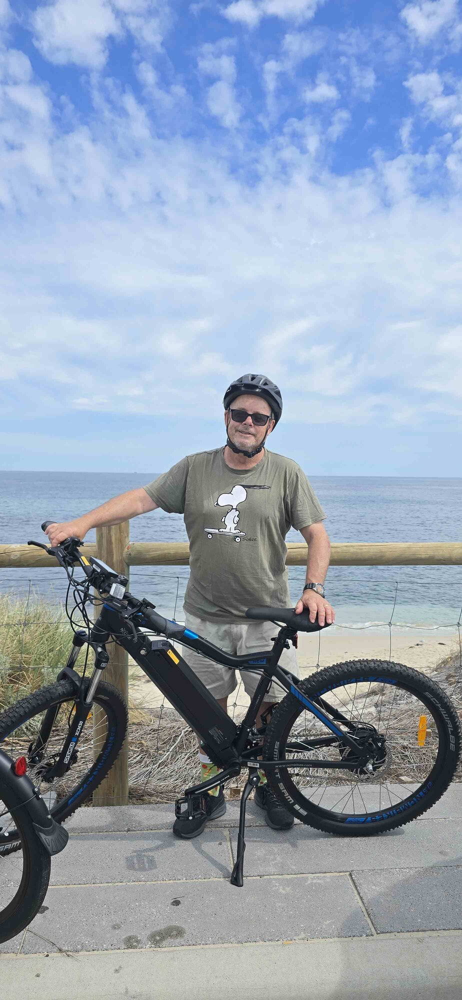

Behind the shutter
Zenergy is one photographer's running record — no studio, no crew, mostly just a camera and whatever light happened to be around that day.

Chasing one moment in time
Nothing here is staged twice. The name Zenergy comes from that instinct — a kind of quiet, focused energy that shows up right before something worth photographing happens. Right when it's meant to happen. The job isn't to create the moment. It's to be ready for it. And then, hopefully, do it some justice.
Most frames are shot handheld, in available light, without a plan beyond "go outside and pay attention."
Not sorted by date. Sorted like a day.
Sky first, then ground, then whatever's growing out of the ground, then the people walking across it, then the light going out. That's the actual order the galleries run in — not a folder, a shape. Keep going and it starts to make more sense than it sounds.
Five acts, one long exhale
The site borrows something from an old song, The Windmills of Your Mind — the way it never really starts or finishes, just keeps turning into the next image that looks like the last one. Wheels inside wheels. Layered over that is a loose mix of Zen Buddhism, Taoism, and a few indigenous and deep-ecological ideas about nature not being separate from us. Ensō opens the site and Wabi-Sabi closes it — the circle drawn, and the circle worn. Everything between is one continuous descent: sky to soil.
Zen Buddhism — beginning, wholeness. The circle opens in stillness. Before land, before water, before life — just sky, scale, and the instinct to look up. The Ensō begins in one breath and is never fully closed.
Taoism & Yin-Yang. The camera drops to the ground. Mountain and river, stillness and motion — water's entire life story from cloud to sea, the unyielding and the yielding completing each other rather than competing.
Shinto Animism & Deep Ecology. Beneath the canopy now. Trees, wildflowers, creatures — all of it alive with kami, all of it equal, none of it background.
Ubuntu & Indra's Net. From landscape to face. Portraits, streets, and deliberate ambiguity — every stranger a knot in the same net, reflecting everyone else in it.
Mono no Aware & Wabi-Sabi. Golden hour, night, fungi, and finally the imperfect close. Decay folding back into life. Worn, not finished.
Kit notes
What's actually used day to day.
How this started
Picked up a secondhand camera with no real plan for it.
Started shooting as often as I could and keeping every frame, good or bad, hoping to learn as I go
Zenergy goes online — the journal moves from a shoebox to here.